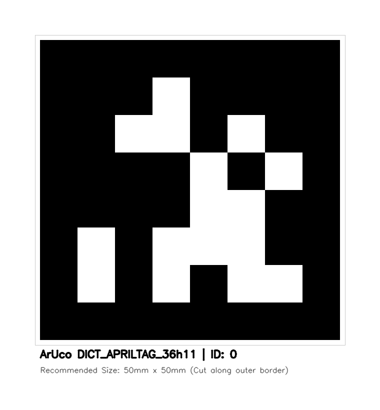

⭐ 추천: AprilTag 3 (tag36h11 ID:0)
스마트폰 손목 마커 디스플레이
폰 화면에 이 창을 띄우고 손목/손등에 쥔 채 카메라를 비추세요.
AprilTag 3 (추천·고정밀)
ArUco 4x4

💡 최고 정밀도 팁:
AprilTag 3
는 NASA/ROS 로봇 표준으로 기울어진 각도에서도 지터 없이 칼같이 추종됩니다.
폰 화면 밝기를 100%로 설정하고 손목에 고정하세요.